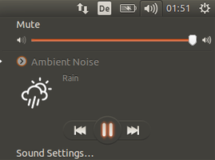
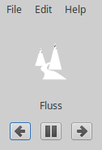

ANoise
Dieser Artikel wurde für die folgenden Ubuntu-Versionen getestet:
Ubuntu 16.04 Xenial Xerus
Zum Verständnis dieses Artikels sind folgende Seiten hilfreich:
|  |
| Standardansicht |
ANoise  (Ambient Noise) von Marcos Alvarez Costales ist ein AudioPlayer der besonderen Art: Statt Musik wird in einer Endlosschleife z.B. Vogelgezwitscher, Meeresrauschen, Grillenzirpen oder Regenwetter abgespielt. Darüber hinaus kann es problemlos um die eigenen Lieblingsgeräusche erweitert werden. Das in Python erstellte Programm setzt einen Soundserver wie PulseAudio oder JACK voraus.
(Ambient Noise) von Marcos Alvarez Costales ist ein AudioPlayer der besonderen Art: Statt Musik wird in einer Endlosschleife z.B. Vogelgezwitscher, Meeresrauschen, Grillenzirpen oder Regenwetter abgespielt. Darüber hinaus kann es problemlos um die eigenen Lieblingsgeräusche erweitert werden. Das in Python erstellte Programm setzt einen Soundserver wie PulseAudio oder JACK voraus.
Um das ausschließlich für die Desktop-Oberfläche Unity konzipierte Programm mit anderen Desktop-Umgebungen nutzen zu können, steht eine alternative grafische Oberfläche zur Verfügung (siehe auch Problembehebung). Nutzer der GNOME Shell können auch die Erweiterung Media player indicator verwenden.
Kreative Naturen kombinieren das Programm gerne mit ablenkungsfreien Editoren wie PyRoom oder FocusWriter.
Installation¶
 Das Programm ist kein Bestandteil der offiziellen Paketquellen. Man muss daher auf ein "Personal Packages Archiv" (PPA) [1] des Programmautors ausweichen.
Das Programm ist kein Bestandteil der offiziellen Paketquellen. Man muss daher auf ein "Personal Packages Archiv" (PPA) [1] des Programmautors ausweichen.
PPA¶
Adresszeile zum Hinzufügen des PPAs:
ppa:costales/anoise
Hinweis!
Zusätzliche Fremdquellen können das System gefährden.
Ein PPA unterstützt nicht zwangsläufig alle Ubuntu-Versionen. Weitere Informationen sind der  PPA-Beschreibung des Eigentümers/Teams costales zu entnehmen.
PPA-Beschreibung des Eigentümers/Teams costales zu entnehmen.
Damit Pakete aus dem PPA genutzt werden können, müssen die Paketquellen neu eingelesen werden.
Nach dem Aktualisieren der Paketquellen werden folgende Pakete installiert [2]:
anoise (ppa)
gir1.2-webkit-3.0 (universe)
 mit apturl
mit apturl
Paketliste zum Kopieren:
sudo apt-get install anoise gir1.2-webkit-3.0
sudo aptitude install anoise gir1.2-webkit-3.0
Im Rahmen der Installation wird eine Geräuschbibliothek installiert, die im ca. 100 MiB großen Paket anoise-media enthalten ist (Café, Feuer, Wald, Nacht, Regen, Strand, Gewitter und Wind).
Optional können weitere Pakete mit zusätzlichen Geräuschen installiert werden:
anoise-community-extension1 (ppa, Bachufer, 60 MiB)
anoise-community-extension2 (ppa, - LKW im Leerlauf, Fischerboot, Dieselmotor, Regen im Wald, Wasserfontäne, Ventilator, Frachtschiff, alte Klimaanlage; 11 MiB)
anoise-community-extension3 (ppa, Weißes Rauschen, Rosa Rauschen, Braunes Rauschen, Brown OSSL; 28 MiB)
mit apturl
Paketliste zum Kopieren:
sudo apt-get install anoise-community-extension1 anoise-community-extension2 anoise-community-extension3
sudo aptitude install anoise-community-extension1 anoise-community-extension2 anoise-community-extension3
Verwendung¶
Das Programm kann bei Ubuntu-Varianten mit einem Anwendungsmenü über den Eintrag „Multimedia -> Umgebungsgeräusche“ gestartet werden [3]. Alternativ kann man den Befehl anoise verwenden.
ANoise merkt sich das zuletzt abgespielte Geräusch und spielt dieses beim nächsten Programmstart automatisch ab. Die mitinstallierten Geräusche befinden sich im Ordner /usr/share/anoise/sounds/. Eigene Geräusche in den Formaten OGG, MP3 oder WAV kopiert man in den Ordner ~/ANoise/ oder ~/.ANoise/ im Homeverzeichnis.
|  |
| ANoise-GUI |
Grafische Oberfläche¶
Alternativ zur standardmäßigen Verwendung als Panel-Applet kann eine einfache grafische Oberfläche eingesetzt werden.
anoise-gui (ppa)
mit apturl
Paketliste zum Kopieren:
sudo apt-get install anoise-gui
sudo aptitude install anoise-gui
Die Bedienung ist einfach: Eine Start-/Stopp-Schaltfläche steuert die Wiedergabe und mit den Schaltflächen vorwärts bzw. rückwärts wird eine andere Geräuschkulisse ausgewählt. Über den Menüpunkt „Edit -> Einstellungen“ kann ein automatisches Beenden nach einer selbstgewählten Zeitspanne in Minuten und ein Autostart beim Anmelden aktiviert werden. Die Konfiguration wird in der Datei ~/.config/anoise/anoise.cfg gespeichert.
Problembehebung¶
Programm startet nicht¶
Bei der Version 0.0.25 und Ubuntu 16.04 verhindert der Fehler 1553518 die Nutzung des Programms. Bis eine fehlerbereinigte Version veröffentlicht ist, empfiehlt sich die Verwendung der alternativen grafischen Oberfläche.
Links¶
ANoise
auf Launchpad
Ambient Noise Player – Umgebungsgeräusche für Ubuntu – und Alternativen
 - Blogbeitrag, 04/2015
- Blogbeitrag, 04/2015Kreative Schreibprogramme für MAC und PC – Eine Auswahl
- Blogbeitrag, 03/2008AudioPlayer
 Programmübersicht
Programmübersicht
- Erstellt mit Inyoka
-
 2004 – 2017 ubuntuusers.de • Einige Rechte vorbehalten
2004 – 2017 ubuntuusers.de • Einige Rechte vorbehalten
Lizenz • Kontakt • Datenschutz • Impressum • Serverstatus -
Serverhousing gespendet von